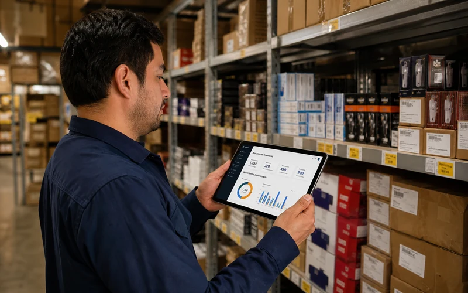

Sistema de gestión de inventario
Gestión de inventario para controlar tu negocio desde el teléfono.
Lleva el control de inventario, ventas y caja de tu tienda o mipyme: desde una app Android sencilla hasta un sistema completo para varios usuarios. Elige la solución que necesita tu operación hoy — y escala cuando crezcas.
Sin registro ni instalación: se abre en tu navegador y la recorres como dueño o como dependiente.

Soluciones
Tres formas de llevar el control de inventario. Elige según cómo funciona tu negocio hoy.
No hace falta saber de tecnología. Cuéntanos cómo trabajas y te decimos qué necesitas — sin venderte lo que no te hace falta.
App de inventario Android · prueba gratis
Comienza a controlar tu negocio desde el teléfono, sin pagar antes de probar.
Una app Android ligera para negocios pequeños que quieren empezar rápido. La instalas, pruebas 15 días completos y luego, desde la propia aplicación, solicitas tu licencia mensual, anual o de dos años. Para obtenerla, llámanos por WhatsApp.
Versa-Inventario · Inventario multiusuario
Dueño y dependientes trabajando con la misma información, en tiempo real desde cada teléfono.
Versa-Inventario es un conjunto de aplicaciones Android pensado para que dueño y dependientes trabajen al mismo tiempo con los mismos datos. El dueño gestiona productos, existencias, precios, cierres y reportes. Los dependientes venden, cobran en efectivo o transferencia y abren y cierran caja. Todo lo que anota uno aparece en el acto para el resto.
La demo es una versión de prueba sin datos reales. Sirve para que recorras la aplicación antes de instalarla.
Sistema de inventario con trazabilidad total
Para en seco las pérdidas hormiga que te están costando miles cada mes.
Cuando el negocio crece, aparecen pérdidas que nadie puede explicar: mercadería que "se vence antes de tiempo", ventas que no se registran, descuadres de caja que terminan "pagando" los empleados o el dueño. Un sistema a medida pone cada movimiento bajo trazabilidad: quién hizo qué, cuándo, en qué turno y por cuánto. No es magia, es que todo queda auditado desde el momento en que pasa.
Preguntas frecuentes
Antes de empezar.
¿Qué es un sistema de gestión de inventario?+
Es una herramienta para registrar las entradas y salidas de mercancía, saber qué existencias tienes en cada momento y conectarlas con tus ventas y cierres de caja. Así sabes qué se vende, qué falta y dónde se pierde dinero, sin libretas ni hojas de cálculo.
¿Por dónde empiezo si no sé qué necesito?+
Escríbenos y cuéntanos cómo funciona hoy tu negocio. En la conversación identificamos qué solución resuelve tu problema principal sin que pagues por lo que no necesitas.
¿Puedo empezar con una solución y agregar más después?+
Sí, los sistemas están diseñados para crecer. Puedes empezar con el módulo de inventario y más adelante agregar ventas, usuarios adicionales o la app Android.
¿El sistema de inventario funciona sin internet?+
La versión Android funciona offline y sincroniza automáticamente cuando hay conexión. Los sistemas web requieren internet, pero están optimizados para conexiones lentas.
¿Pueden usar el control de inventario varios empleados a la vez?+
Sí, con roles y permisos por usuario. Cada empleado accede solo a lo que le corresponde según su función en el negocio.
¿Incluye capacitación?+
Sí, todo proyecto incluye sesiones de capacitación para tu equipo y un manual de uso. El sistema de nada sirve si no saben usarlo.
Hablemos
¿Listo para dejar de perder
tiempo y dinero en desorden?
Cuéntanos cómo funciona tu negocio hoy y en una sola conversación definimos qué solución necesitas.
Empezar ahora ↗